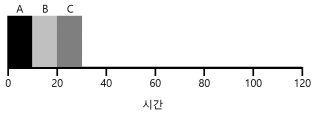

1. 스케줄링: 개요
이전 포스트에서는 프로세스를 실행시키기 위한 문맥 교환 등의 저수준 기법에 대해서 설명하였다. 이번 포스트에서는 운영체제 스케줄러의 고수준 정책에 관한 이야기다.
1.1 워크로드에 대한 가정
- 프로세스가 동작하는 일련의 행위를 워크로드(workload)라 한다.
- 적절한 워크로드의 선정은 스케줄링 정책 개발에 매우 중요한 부분이다.
- 스케줄러의 종류를 임의로 세가지로 구분한다.
- 기본 스케줄러
- 선입선출(FIFO)
- 최단 작업 우선(SJF, Shortest Job First)
- 최소 잔여시간 우선(STCF, Shortest Time-to-Completion First)
- 라운드 로빈(RR, Round-Robin)
- 멀티 레벨 피드백 큐(MLFQ)
- 비례 볘분 or 공정 배분
- 추첨 스케줄링(lottery scheduling)
- 보폭 스케줄링(stride scheduling)
- 리눅스 CFS(Completely Fair Scheduler)
- 기본 스케줄러
2. 기본 스케줄러
2.1 선입선출(FIFO)
- 먼저 도착한 프로세스를 우선적으로 스케줄링 한다.

- 위의 그림은 FIFO의 간단한 예이다.

- 위의 그림은 FIFO의 단점을 보여주는 예이다.
- 긴 실행 시간을 가진 A가 먼저 도착했기 때문에 전체 평균 반환 시간이 110초로 늘어났다.
- 만약 B, C를 먼저 해결한다면 전체 평균 반환 시간은 대폭 줄어들 것이다.
- 해당 현상을 convoy effect 라고 부르며 CPU를 많이 필요로 하지 않는 프로세스들이, CPU를 오랫동안 사용하는 프로세스가 끝나기를 기다리는 현상을 말한다.
반환시간은 작업이 완료된 시각에서 작업이 도착한 시각을 뺀 시각이다.
2.2 최단 작업 우선(SJF)
- 앞서 소개한 convoy effect는 최단 작업 우선 스케줄링으로 간단하게 해결할 수 있다.
- 가장 짧은 실행 시간을 가진 작업을 먼저 실행시킨다.

- 위의 그림은 SJF의 간단한 예이다.
- 위의 그림은 SJ의 단점을 보여주는 예이다.
- 긴 실행 시간을 가진 A가 실행중에 B,C가 도착했기 때문에 convoy 문제가 다시 발생한다.
2.3 최소 잔여시간 우선(STCF)
- SJF에 선점 기능을 추가한 스케줄러다.
- 현재 실행중인 작업의 잔여 실행 시간과 새로운 작업의 잔여 실행 시간을 비교하여, 잔여 실행 시간이 가장 작은 작업을 스케줄한다.
- 위의 그림은 STCF의 간단한 예이다.
2.4 라운드 로빈(RR)
FIFO, SJF, STCF는 모두 평가 기준을 반환 시간인 스케줄러이다. RR은 스케줄러의 응답 시간 평가 기준을 추가한 기법이다.
- RR은 프로세스의 작업이 끝날 때 까지 기다리지 않는다. 대신 일정 시간 동안 실행한 후 실행 큐의 다음 작업으로 전환한다.
- 이때 작업이 실행되는 일정 시간을 타임 슬라이스(time slice) 또는 스케줄링 퀀텀(scheduling quantum)이라 부른다.
- RR은 때때로 타임 슬라이싱이라고 불린다.
- 위의 그림은 SJF 스케줄링이다. 응답 시간이 좋지 않다.
- 위의 그림은 RR 스케줄링이다. 응답 시간이 좋다.
SJF, STCF, RR 모두 프로세스의 미래 동작을 예측해야 가능한 스케줄링이다. 하지만, 실제로 프로세서가 미래동작을 예측하는데 있어 많은 어려움이 있다. 이를 해결하기 위해 과거의 프로세스 동작 이력을 반영하는 방식으로 해결한다. 해당 스케줄러는 멀티 레벨 피드백 큐이다.
3. 멀티 레벨 피드백 큐(MLFQ)
- MLFQ가 해결하려고 하는 기본적인 문제는 두 가지이다.
- 짧은 작업을 먼저 실행시켜 반환 시간을 최적화하고자 한다.
- MLFQ는 대화형 사용자를 위해 응답 시간을 최적화한다.
3.1 MLFQ: 기본 규칙
- MLFQ는 여러 개의 큐로 구성되며, 각각 다른 우선순위(priority level)가 배정된다.
- 실행할 프로세스를 결정하기 위하여 우선순위를 사용한다.
- 큐에 둘 이상의 작입어 존재하면 RR 스케줄링 알고리즘이 사용된다.
-
고정된 우선순위를 부여하는 것이 아니라 각 작업의 특성에 따라 동적으로 우선순위를 부여한다.
- 규칙
- Priority(A) > Priority(B) 이면, A가 실행된다.
- Priority(A) = Priority(B) 이면, A와 B는 RR 방식으로 실행한다.
- 작업이 시스템에 진입하면, 가장 높은 우선순위, 즉 맨 위의 큐에 놓여진다.
- 주어진 타임 슬라이스를 모두 사용하면 우선순위는 낮아진다. 즉, 한 단계 아래 큐로 이동한다.
- 타임 슬라이스를 소진하기 전에 CPU를 양도하면 같은 우선순위를 유지한다.
- 위의 그림은 규칙 4번을 보여준다.
- 위의 그림은 규칙 3번을 보여준다.
- A가 제일 낮은 우선순위에서 실행 되는 동안, B가 새로 들어옴으로써 가장 높은 우선순위에 할당된다. 이후 타임 슬라이스를 소모해가며 우선순위가 낮아진다.
3.2 위의 규칙으로 인한 MLFQ의 문제
- 두가지 문제가 있다.
- 규칙 5번에 의해 기아 상태가 발생할 수 있다.
- 타임 슬라이스의 99퍼를 사용하고 강제로 입출력을 주어서 프로세서를 악의적으로 독점할 수 있다.
-
위의 그림은 기아 상태의 예이다. A(검정색)이 반복되는 입출력 작업으로 인해 실행되지 않는 모습을 보여준다.
-
첫번째 문제는 상향 조정(boost)를 사용하는 것이다.
- 일정 시간 S가 지나면, 시스템의 모든 작업을 최상위 큐로 이동시킨다.
-
위의 그림은 boost의 예이다.
-
두번째 문제는 CPU 총 사용 시간을 측정 하여 일정 CPU 시간을 소진하면 다음 우선순위 큐로 강등시킨다.
- 위의 그림은 CPU 사용 시간 측정의 예이다.
4. 비례 볘분(Proportional Share) or 공정 배분(fair share)
- 비례 배분 혹은 공정 배분이라고도 하는 유형의 개념은 반환 시간이나 응답 시간을 최적화하는 대신 스케줄러가 각 작업에게 CPU의 일정 비율을 보장하는 것이 목적이다.
- 비례 배분 스케줄링의 좋은 예는 추첨 스케줄링(lottery scheduling)이다.
4.1 추첨 스케줄링
- 추첨권(티켓) 이라는 기본적인 개념이 추첨 스케줄링의 근간을 이룬다.
- A 와 B 두 프로세스가 있을 때, A는 75장, B는 25장을 추첨권을 준다. -> A에게 75% CPU, B에게 25% CPU를 주기 위함
- 추첨 스케줄링은 이러한 목적을(타임 슬라이스가 끝날 때마다) 확률기반으로 달성한다.
- A : 0~74, B: 75~99, 스케줄러는 추첨권을 뽑고 뽑힌 추첨권 값에 따라 다음에 실행될 프로세스가 결정된다.
추첨 기법
- 추첨권 화폐(ticket currency)
- A가 받은 추첨권 75장을 자신의 작업들에 나누어 줄 수 있다.
- 추첨권 양도(ticket transfer)
- 양도를 통하여 프로세스는 일시적으로 추첨권을 다른 프로세스에게 넘겨줄 수 있다.
- 추첨권 팽창(ticket inflation)
- 프로세스는 일시적으로 자신이 소유한 추첨권의 수를 늘이거나 줄일 수 있다.
4.2 보폭 스케줄링(stride scheduling)
-
무작위성(추첨 스케줄링)을 이용하면 스케줄러를 단순하게 만들 수 있지만, 정확한 비율을 보장할 수 없다. 이 때문에 결정론적 공정 배분 스케줄러인 보폭 스케줄링을 고안하였다.
-
보폭 스케줄링
- 시스템의 각 작업은 보폭을 가지고 있으며 프로세스가 실행될 때마 pass라는 값을 보폭만큼 증가시켜 CPU를 얼마나 사용하였는지 추적한다.
- 가장 작은 pass 값을 다음 프로세스로 결정한다.
- 위의 그림은 보폭 스케줄링의 예이다.
4.3 리눅스 CFS(Completely Fair Scheduler)
- 이 스케줄러의 장점은 효율성과 확장성이다.
기본 연산
- 기존 스케줄러들은 고정된 길이의 타임 슬라이스를 사용한다. 반면에 CFS는 모든 프로세서들에게 CPU를 공평하게 배분하기 위해 virtual runtimne(vruntime) 이라는 간단한 counting 기반 테크닉을 사용한다.
- 프로세스가 실행되면 스케줄러는 해당 프로세서의 vruntime 값을 누적시킨다.
- 스케줄링시 CFS는 가장 낮은 vruntime을 가진 프로세스를 다음에 실행할 프로세스로 선택한다.
- CFS가 자주 실행되면, 공정성이 좋아지지만 성능이 악화된다. CFS가 드물게 실행되면, 공정성은 악화되지만 성능은 향상된다.
- sched_latency 변수를 사용하여 하나의 프로세스가 CPU를 사용한 후, 다음 번에 CPU를 사용할 수 있을 때까지의 최대 시간 간격을 나타낸다.(약 48ms)
- min_granularity 변수를 사용하여 각 프로세스에게 할당된 시간 조각 이하가 되지 않도록 하여 스케줄링한다. (약 6ms)
가중치
- CFS는 사용자나 관리자가 프로세스의 우선 순위를 조정하여 다른 프로세스들 보다 더 많은 CPU 시간을 할당받게 할 수 있다.
- nice를 부여받는데 이를 부여 받으면 vruntime에 영향을 준다.
- 예) nice가 -10이면(음수일수록 우선순위가 높음) vruntime은 10분의1 만큼 증가한다.(더 많은 시간동안 실행될 수 있음)
Red-Black 트리의 활용
- 실행할 프로세스를 선택하는데 Red-Black 트리를 활용한다.